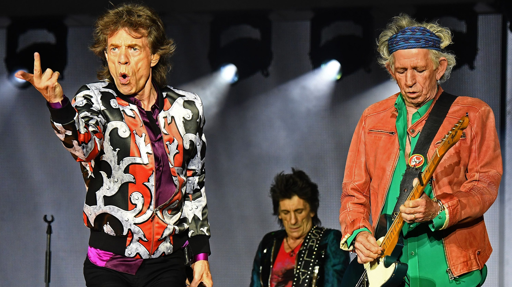
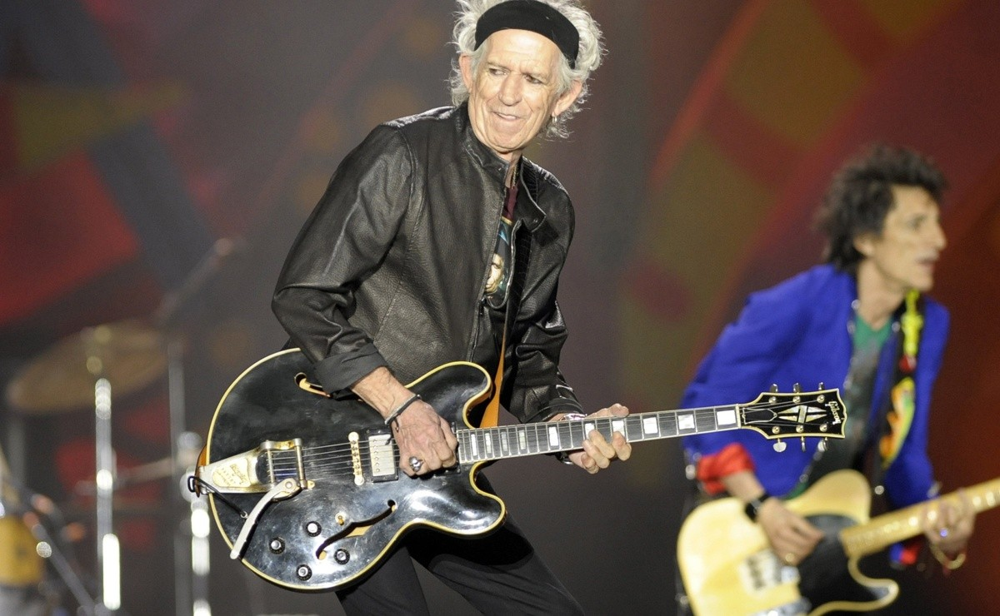
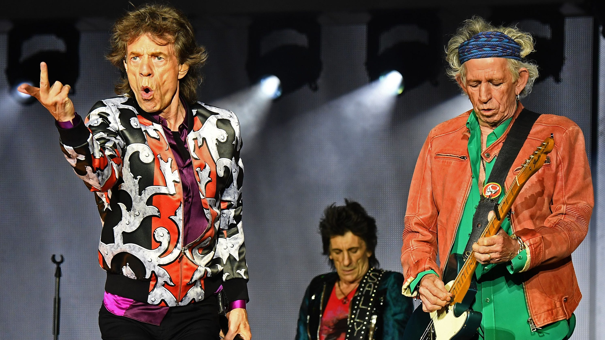
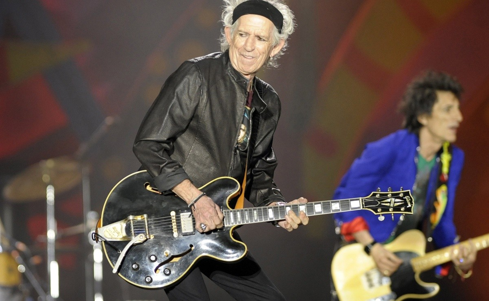

Reseña Disco
Un Álbum Legendario
Los Rolling Stones tardaron dos años en acabar Sticky Fingers, el álbum más emblemático de su carrera, famoso tanto por sus canciones sombrías y revolucionarias como por su atrevida portada. Fue el primer trabajo que grabó la banda bajo su propio sello discográfico y también el primero en que se les unía Mick Taylor.
Lanzado el 23 de abril de 1971, Sticky Fingers contiene algunas de las canciones más populares de los Rolling Stones, incluidas Wild Horses y Brown Sugar. Con temas que aludían al consumo de drogas, como Sister Morphine, álbum que incorporó por primera vez el mítico logo de la lengua que diseñara John Pasche ha superado la prueba del tiempo y sigue siendo, sin envejecer ni un ápice, uno de los favoritos de los amantes del rock. Su portada, clasificada en el puesto 22 de la lista Billboard de las mejores ilustraciones de todos los tiempos, alcanzó fama mundial por mostrar en primer plano el ‘paquete’ de un hombre en vaqueros.
Galeria trayectoria
 



Reseña Grupo

The Rolling Stones
La banda The Rolling Stones fue fundada por Brian Jones, Mick Jagger, Keith Richards, Bill Wyman, Ian Stewart y Charlie Watts en Londres en el año 1962. Tras diferentes cambios de integrantes, actualmente la banda está formada por Mick Jagger (voz, guitarra, bajo y armónica), Keith Richards (guitarra, bajo y voz), Charlie Watts (batería) y Ron Wood (guitarra y bajo). Actualmente son la banda más longeva y duradera de la historia del rock. Se dice que fueron ellos quienes sentaron las bases del rock contemporáneo. Su carrera ha sido reconocida por numerosos medios y han sido galardonados en muchas ocasiones; uno de los grupos más grandes e importantes de la historia del rock. A lo largo de su trayectoria han ido adaptándose a cada momento incluyendo en su música elementos de otros estilos musicales. A día de hoy cuentan con 25 álbumes de estudio, 32 de sus sencillos se han posicionado entre los más famosos de UK y EE.UU. y han vendido más de 250 millones de copias en todo el mundo.